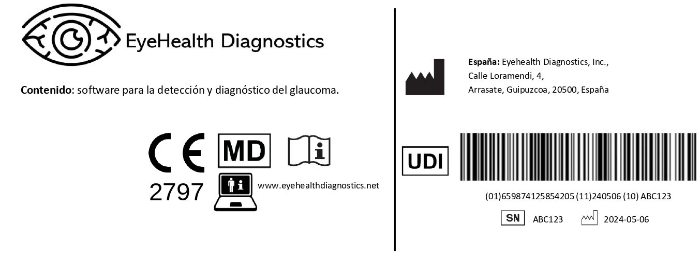

GLAURUS
Software de Apoyo al Diagnóstico de Glaucoma
Nuestro software de apoyo al diagnóstico de glaucoma utiliza algoritmos avanzados para analizar imágenes del nervio óptico y campos visuales, ayudando a los profesionales de la salud a detectar signos tempranos de glaucoma y monitorear su progresión.
Instrucciones:
Para visualizar las instrucciones haga 'click' en el siguiente enlace:
En la siguiente imagen se muestra la etiqueta del Software.

Declaración de Conformidad
Este software cumple con los estándares de seguridad y regulaciones aplicables en el procesamiento de datos médicos confidenciales. La exactitud de los resultados está respaldada por la investigación clínica y la validación continua por parte de expertos en oftalmología.